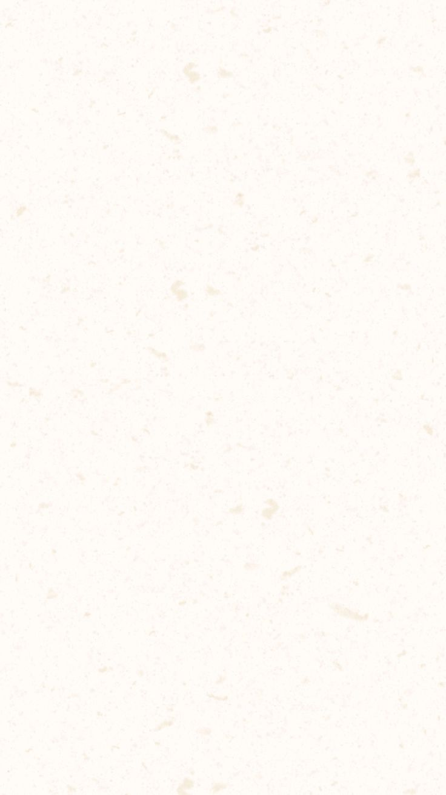

Hi, I'm Nikki!
A bit about me
I'm a senior studying CS at the University of Michigan. I currently work part-time as a Student Lead Computer Consultant for the university, where I spend my days managing fellow students, troubleshooting tech issues around campus, and utilizing JavaScript to automate repetitive processes to make my coworkers' lives easier. Technically, I'm most at home in Unity (C#) for gameplay systems, C++ for school projects, and I also build practical tooling with JavaScript (Apps Script).
My time studying here reinvigorated my childhood passions by combining my love for art and games with code! Understanding what moves people and what makes them laugh, rage, and lock in through the iterative design process has been one of my most rewarding problems to solve — especially in game development. I'm currently on a journey to experience all sorts of things in hopes of getting closer to understanding what even is "fun" in terms of game dev.
If you want to collaborate or chat about roles, please feel free to reach out!
Projects
BAM — Custom Game Engine
BAM is a 2D game engine built in C++ with a Lua scripting runtime, featuring an integrated visual tile map editor powered by Dear ImGui.
The editor launches directly from the engine binary — no separate tool, no separate build target. A single --play flag switches the same executable between editor and game mode. In the editor, level designers paint tile maps onto a grid and hit Save; the engine surgically rewrites the stage1 table inside the game's Lua scripts and the changes are immediately playable.
The tile palette is discovered automatically at runtime by parsing GameManager.lua — the editor scans for tile_code comparisons and nearby Instantiate calls to build the brush picker dynamically, requiring no separate tile configuration file.